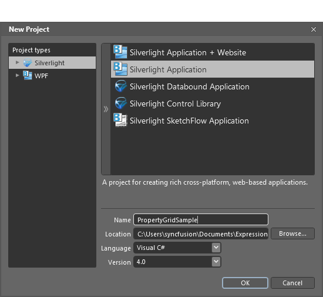

Following are the steps to add the PropertyGrid control by using Blend.
1. Open Blend, On the File Menu click New Project. This opens the New Project dialog box.

Figure 1149: PropertyGrid
2. In the Project type’s panel, select Silverlight application and then click OK.

Figure 1150: Blend - New Project
3. Add the following Reference with the sample project.
· Syncfusion.PropertyGrid.Silverlight.dll
· Syncfusion.Shared.Silverlight.dll
· Syncfusion.Tools.Silverlight.dll
4. On the Window menu, select Assets. This opens the Assets Library dialog box.
5. In the Search box, type PropertyGrid. This displays the search results.
6. Drag the PropertyGrid control to Design View.

Figure 1151: Blend Design View